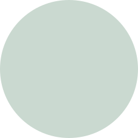

Nemt. Sundt. Lækkert. Japansk. Økologisk.
Med Nippons måltidskasser får du friske, lækre råvarer og nye spændende opskrifter med et japansk twist. Det bliver det endda leveret lige til døren! Så kan I lave velsmagende aftensmad på ingen tid.
se måltidskasser


til dig du skønne!
Hvordan fungerer det?

Byg din egen måltidskasse
Se vores store udvalg af lækre retter hver uge, og saml en måltidskasse der passer lige til din familie.
Få alt leveret til døren
Fleksibel levering af dine friske varer - som du selv kan planlægge uge for uge - også når du skal på ferie!

Lav lækker og
sund mad
Følg opskrifternes få trin, og nyd derefter din skønne hjemmelavede mad!